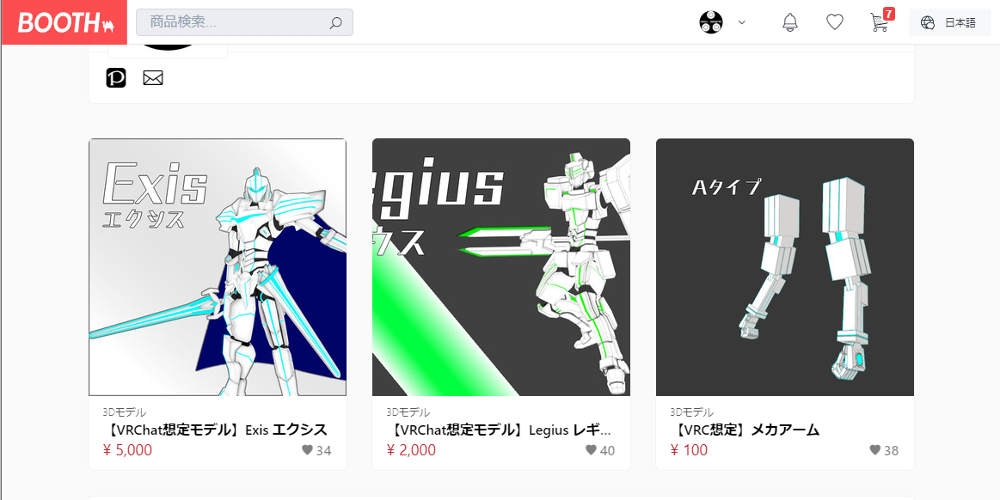
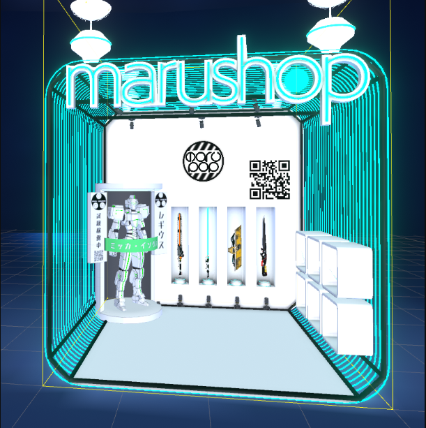

3.制作した3Dモデルのバーチャルマーケットでの販売とその結果
販売方法
- Booth：個人が出店できるネットショップサービス
- バーチャルマーケット：VR空間上の展示即売会
来場者が会場に展示された3Dアバターや3Dモデルなどを自由に試着、鑑賞、購入できる
販売期間
- Booth :2019/08/08 ～ 2019/12/31
- バーチャルマーケット :2019/09/21 ～ 2019/09/28
Boothのショップ
- Booth：個人が出店できるネットショップサービス
- 仕組みはヤフーオークションやメルカリと同様

バーチャルマーケットの出展
- バーチャルマーケット：VR空間上の展示即売会
バーチャルマーケットでアバターを試着している様子
自分が出展したブース
PR方法
- タグ付けの工夫
- サムネイル画像の工夫
- バーチャルマーケットで展示のみでなく試着可能にした
- Twitterで販売告知とBoothのショップURLやバーチャルマーケット参加の宣伝をした
- VRChatでは販売前のモデルを自分のアバターにして交流する人たちに「鋭意制作中ですので楽しみにしててください」と宣伝した
販売結果・購入者の反応
- 販売結果 2019/08/08 ～ 2019/12/31 145日間
- モデル1 6体（5,000円/体）
- モデル2 14体（2,000円/体）
- 購入者の反応
- 改変がしやすい
- かっこいい、こういうのが欲しかった
- このモデルをイメージ元にして作ったパーツを販売する人もでた
- 海外ユーザーからの反応がきた
考察
- ニーズに合わせて二体作って販売することができたことは良かった
- バーチャルマーケットで展示のみでなく試着可能にした
- カスタマイズ性を二体のモデル両方に持たせていたので、モデル1も売れたのではないか
- 販売前の予想としては、販売前から交流があり、「出したら買うよ」と言ってくれた3～4人は買ってくれると思っていたが、交流外の人にも売れたことは予想外の喜びだった
- 制作者のこだわりやアバターの持つ世界観を強く押し出すことで「ああ、こういうのが欲しかったんだ」というユーザーの隠れたニーズの掘り起こしにつながったのではないか
- ユーザーのニーズを満たすだけではなく、こちらからニーズを作り出す、という両方の視点を持つことが大事であるとわかった
- 汎用度が高いモデルで人気が出れば、パーツやアクセサリを作成する人が増えてカスタマイズの幅が広がり、さらに交流の裾野が広がることも考えられる
- タグ付けにおいて、どのタグが一番ヒットしたか調べられるようにすればよかった